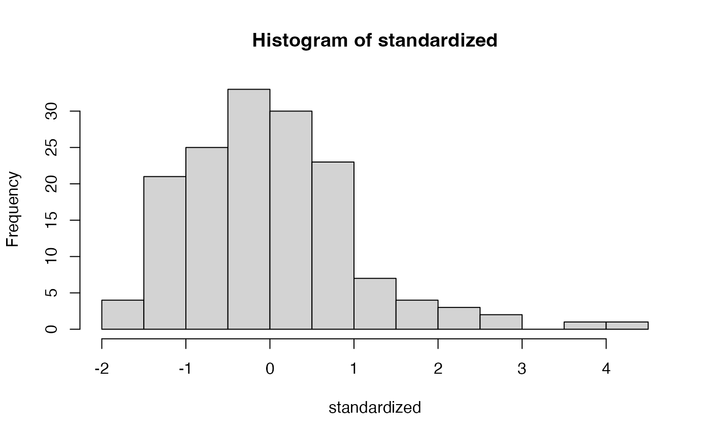

Data Screening
lecture_data_screen.RmdData Screening Overview
In this lecture, we will give you demonstration of what you might do to data screen a dataset for structural equation modeling.
-
There are four key steps:
- Accuracy: dealing with errors
- Missing: dealing with missing data
- Outliers: determining if there are outliers and what to do with them
- Assumptions: additivity, multivariate normality, linearity, homogeneity, and homoscedasticity
Note that the type of data screening may change depending on the type of data you have (i.e., ordinal data has different assumptions)
Mostly, we will focus on datasets with traditional parametric assumptions
Hypothesis Testing versus Data Screening
- Generally, we set an value, or Type 1 error
- Often, this translates to “statistical significance”, p < = significant, where is often defined as .05
- In data screening, we want things to be very unusual before correcting or eliminating things
- Therefore, we will often lower our criterion and use p < to denote problems with the data, where is lowered to .001
Order is Important
- While datascreening can be performed many ways, it’s important to know that you should fix errors, missing data, etc. before checking assumptions
- The changes you make effect the next steps
An Example
- We will learn about data screening by working an example
- This data is made up data where people were asked to judge their own learning in different experimental conditions, and they rated their confidence of remembering information, and then we measured their actual memory of a situation
Accuracy Continuous
- Confidence and recall should only be between 0 and 100.
- Looks like we have some data to clean up.
summary(no_typos)
#> JOL_group type_cue conf1 conf2
#> Delayed :84 Cue Only :76 Min. :20.70 Min. :23.85
#> Immediate:74 Stimulus Pairs:82 1st Qu.:42.79 1st Qu.:41.94
#> Median :49.48 Median :50.63
#> Mean :49.28 Mean :50.29
#> 3rd Qu.:55.50 3rd Qu.:57.21
#> Max. :72.40 Max. :75.42
#> NA's :3
#> conf3 conf4 conf5 conf6
#> Min. :24.43 Min. :-48.75 Min. :19.97 Min. :22.31
#> 1st Qu.:44.41 1st Qu.: 42.04 1st Qu.:43.48 1st Qu.:43.03
#> Median :48.94 Median : 48.40 Median :50.79 Median :51.12
#> Mean :49.53 Mean : 48.24 Mean :50.91 Mean :50.67
#> 3rd Qu.:54.91 3rd Qu.: 55.58 3rd Qu.:57.29 3rd Qu.:57.93
#> Max. :74.27 Max. : 76.62 Max. :77.40 Max. :79.93
#> NA's :3 NA's :2 NA's :3 NA's :4
#> conf7 conf8 conf9 conf10
#> Min. :22.15 Min. :24.74 Min. :25.16 Min. : 25.87
#> 1st Qu.:43.59 1st Qu.:42.81 1st Qu.:41.48 1st Qu.: 43.13
#> Median :48.51 Median :50.75 Median :50.66 Median : 49.10
#> Mean :49.55 Mean :50.61 Mean :49.61 Mean : 52.42
#> 3rd Qu.:56.32 3rd Qu.:58.10 3rd Qu.:56.68 3rd Qu.: 55.79
#> Max. :76.23 Max. :80.01 Max. :81.59 Max. :470.53
#> NA's :5 NA's :4 NA's :4 NA's :4
#> rec1 rec2 rec3 rec4
#> Min. :47.39 Min. :47.91 Min. :46.79 Min. :48.35
#> 1st Qu.:57.33 1st Qu.:55.79 1st Qu.:56.32 1st Qu.:56.51
#> Median :60.48 Median :59.95 Median :60.16 Median :59.45
#> Mean :60.25 Mean :59.90 Mean :59.85 Mean :59.74
#> 3rd Qu.:63.50 3rd Qu.:63.58 3rd Qu.:63.56 3rd Qu.:62.87
#> Max. :71.60 Max. :71.43 Max. :72.08 Max. :74.07
#> NA's :3 NA's :3 NA's :3 NA's :3
#> rec5 rec6 rec7 rec8
#> Min. :-59.85 Min. : 42.84 Min. :46.67 Min. :50.64
#> 1st Qu.: 56.31 1st Qu.: 56.96 1st Qu.:56.88 1st Qu.:56.58
#> Median : 59.33 Median : 60.19 Median :60.15 Median :59.16
#> Mean : 58.84 Mean : 60.81 Mean :60.17 Mean :59.62
#> 3rd Qu.: 62.72 3rd Qu.: 63.84 3rd Qu.:64.18 3rd Qu.:62.64
#> Max. : 73.07 Max. :161.86 Max. :71.01 Max. :72.50
#> NA's :5 NA's :3 NA's :4 NA's :3
#> rec9 rec10
#> Min. :45.66 Min. :45.49
#> 1st Qu.:56.04 1st Qu.:56.17
#> Median :59.40 Median :59.68
#> Mean :59.56 Mean :59.47
#> 3rd Qu.:63.12 3rd Qu.:62.70
#> Max. :73.32 Max. :72.59
#> NA's :4 NA's :3Accuracy Continuous
# how did I get 3:22?
# how did I get the rule?
# what should I do?
no_typos[ , 3:22][ no_typos[ , 3:22] > 100 ]
#> [1] NA NA NA NA NA NA NA NA
#> [9] NA NA NA NA NA NA NA NA
#> [17] NA NA NA NA NA NA NA NA
#> [25] NA NA NA NA NA NA 470.5320 NA
#> [33] NA NA NA NA NA NA NA NA
#> [41] NA NA NA NA NA NA NA NA
#> [49] NA NA NA 161.8596 NA NA NA NA
#> [57] NA NA NA NA NA NA NA NA
#> [65] NA NA NA NA
no_typos[ , 3:22][ no_typos[ , 3:22] > 100 ] <- NA
no_typos[ , 3:22][ no_typos[ , 3:22] < 0 ] <- NAMissing
-
There are two main types of missing data:
- Missing not at random: when data is missing because of a common cause (i.e., everyone skipped question five)
- Missing completely at random: data is randomly missing, potentially due to computer or human error
We also have to distinguish between missing data and incomplete data
no_missing <- no_typos
summary(no_missing)
#> JOL_group type_cue conf1 conf2
#> Delayed :84 Cue Only :76 Min. :20.70 Min. :23.85
#> Immediate:74 Stimulus Pairs:82 1st Qu.:42.79 1st Qu.:41.94
#> Median :49.48 Median :50.63
#> Mean :49.28 Mean :50.29
#> 3rd Qu.:55.50 3rd Qu.:57.21
#> Max. :72.40 Max. :75.42
#> NA's :3
#> conf3 conf4 conf5 conf6
#> Min. :24.43 Min. :20.92 Min. :19.97 Min. :22.31
#> 1st Qu.:44.41 1st Qu.:42.12 1st Qu.:43.48 1st Qu.:43.03
#> Median :48.94 Median :48.42 Median :50.79 Median :51.12
#> Mean :49.53 Mean :48.86 Mean :50.91 Mean :50.67
#> 3rd Qu.:54.91 3rd Qu.:55.62 3rd Qu.:57.29 3rd Qu.:57.93
#> Max. :74.27 Max. :76.62 Max. :77.40 Max. :79.93
#> NA's :3 NA's :3 NA's :3 NA's :4
#> conf7 conf8 conf9 conf10
#> Min. :22.15 Min. :24.74 Min. :25.16 Min. :25.87
#> 1st Qu.:43.59 1st Qu.:42.81 1st Qu.:41.48 1st Qu.:43.07
#> Median :48.51 Median :50.75 Median :50.66 Median :49.00
#> Mean :49.55 Mean :50.61 Mean :49.61 Mean :49.69
#> 3rd Qu.:56.32 3rd Qu.:58.10 3rd Qu.:56.68 3rd Qu.:55.77
#> Max. :76.23 Max. :80.01 Max. :81.59 Max. :78.00
#> NA's :5 NA's :4 NA's :4 NA's :5
#> rec1 rec2 rec3 rec4
#> Min. :47.39 Min. :47.91 Min. :46.79 Min. :48.35
#> 1st Qu.:57.33 1st Qu.:55.79 1st Qu.:56.32 1st Qu.:56.51
#> Median :60.48 Median :59.95 Median :60.16 Median :59.45
#> Mean :60.25 Mean :59.90 Mean :59.85 Mean :59.74
#> 3rd Qu.:63.50 3rd Qu.:63.58 3rd Qu.:63.56 3rd Qu.:62.87
#> Max. :71.60 Max. :71.43 Max. :72.08 Max. :74.07
#> NA's :3 NA's :3 NA's :3 NA's :3
#> rec5 rec6 rec7 rec8
#> Min. :48.28 Min. :42.84 Min. :46.67 Min. :50.64
#> 1st Qu.:56.40 1st Qu.:56.95 1st Qu.:56.88 1st Qu.:56.58
#> Median :59.35 Median :60.15 Median :60.15 Median :59.16
#> Mean :59.62 Mean :60.16 Mean :60.17 Mean :59.62
#> 3rd Qu.:62.74 3rd Qu.:63.78 3rd Qu.:64.18 3rd Qu.:62.64
#> Max. :73.07 Max. :71.56 Max. :71.01 Max. :72.50
#> NA's :6 NA's :4 NA's :4 NA's :3
#> rec9 rec10
#> Min. :45.66 Min. :45.49
#> 1st Qu.:56.04 1st Qu.:56.17
#> Median :59.40 Median :59.68
#> Mean :59.56 Mean :59.47
#> 3rd Qu.:63.12 3rd Qu.:62.70
#> Max. :73.32 Max. :72.59
#> NA's :4 NA's :3Missing Replacement
-
How much data can I safely replace?
- Replace only things that make sense.
- Replace as minimal as possible, often less than 5%
- Replace based on completion/missingness type
Missing Columns
- Separate out columns that you should not replace
- Make sure columns have less than 5% missing for replacement
Missing Replacement
library(mice)
#>
#> Attaching package: 'mice'
#> The following object is masked from 'package:stats':
#>
#> filter
#> The following objects are masked from 'package:base':
#>
#> cbind, rbind
tempnomiss <- mice(replace_columns)
#>
#> iter imp variable
#> 1 1 conf2 conf3 conf4 conf5 conf7 conf10 rec5 rec6 rec7 rec9
#> 1 2 conf2 conf3 conf4 conf5 conf7 conf10 rec5 rec6 rec7 rec9
#> 1 3 conf2 conf3 conf4 conf5 conf7 conf10 rec5 rec6 rec7 rec9
#> 1 4 conf2 conf3 conf4 conf5 conf7 conf10 rec5 rec6 rec7 rec9
#> 1 5 conf2 conf3 conf4 conf5 conf7 conf10 rec5 rec6 rec7 rec9
#> 2 1 conf2 conf3 conf4 conf5 conf7 conf10 rec5 rec6 rec7 rec9
#> 2 2 conf2 conf3 conf4 conf5 conf7 conf10 rec5 rec6 rec7 rec9
#> 2 3 conf2 conf3 conf4 conf5 conf7 conf10 rec5 rec6 rec7 rec9
#> 2 4 conf2 conf3 conf4 conf5 conf7 conf10 rec5 rec6 rec7 rec9
#> 2 5 conf2 conf3 conf4 conf5 conf7 conf10 rec5 rec6 rec7 rec9
#> 3 1 conf2 conf3 conf4 conf5 conf7 conf10 rec5 rec6 rec7 rec9
#> 3 2 conf2 conf3 conf4 conf5 conf7 conf10 rec5 rec6 rec7 rec9
#> 3 3 conf2 conf3 conf4 conf5 conf7 conf10 rec5 rec6 rec7 rec9
#> 3 4 conf2 conf3 conf4 conf5 conf7 conf10 rec5 rec6 rec7 rec9
#> 3 5 conf2 conf3 conf4 conf5 conf7 conf10 rec5 rec6 rec7 rec9
#> 4 1 conf2 conf3 conf4 conf5 conf7 conf10 rec5 rec6 rec7 rec9
#> 4 2 conf2 conf3 conf4 conf5 conf7 conf10 rec5 rec6 rec7 rec9
#> 4 3 conf2 conf3 conf4 conf5 conf7 conf10 rec5 rec6 rec7 rec9
#> 4 4 conf2 conf3 conf4 conf5 conf7 conf10 rec5 rec6 rec7 rec9
#> 4 5 conf2 conf3 conf4 conf5 conf7 conf10 rec5 rec6 rec7 rec9
#> 5 1 conf2 conf3 conf4 conf5 conf7 conf10 rec5 rec6 rec7 rec9
#> 5 2 conf2 conf3 conf4 conf5 conf7 conf10 rec5 rec6 rec7 rec9
#> 5 3 conf2 conf3 conf4 conf5 conf7 conf10 rec5 rec6 rec7 rec9
#> 5 4 conf2 conf3 conf4 conf5 conf7 conf10 rec5 rec6 rec7 rec9
#> 5 5 conf2 conf3 conf4 conf5 conf7 conf10 rec5 rec6 rec7 rec9Outliers
We will mostly be concerned with multivariate outliers in SEM.
These are rows of data (participants) who have extremely weird patterns of scores when compared to everyone else.
-
We will use Mahalanobis Distance to examine each row to determine if they are an outlier
- This score D is the distance from the centriod or mean of means
- We will use a cutoff score based on our strict screening criterion, p < .001 to determine if they are an outlier
- This cutoff criterion is based on the number of variables rather than the number of observations
Assumptions Additivity
- Additivity is the assumption that each variable adds something to the model
- You basically do not want to use the same variable twice, as that lowers power
- Often this is described as multicollinearity
- Mainly, SEM analysis has a lot of correlated variables, you just want to make sure they aren’t perfectly correlated
Assumptions Linearity
- We assume the the multivariate relationship between continuous variables is linear (i.e., no curved)
- There are many ways to test this, but we can use a QQ/PP Plot to examine for linearity
plot(fake_model, 2)Assumptions Normality
- We expect that the residuals are normally distributed
- Not that the sample is normally distributed
- Generally, SEM requires a large sample size, thus, buffering against normality deviations
hist(standardized)